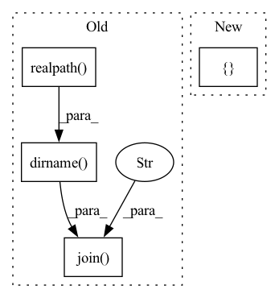

Pattern ID :3432

Before Change
def main():
experiment_dir = os.path.dirname(os.path.realpath(__file__))
hparams_file = os.path.join(experiment_dir, "hyperparams.yaml")
data_folder = "../../../../samples/audio_samples/nn_training_samples"
data_folder = os.path.realpath(os.path.join(experiment_dir, data_folder))
with open(hparams_file) as fin:
hparams = sb.load_extended_yaml(fin, {"data_folder": data_folder})
After Change
with open(hparams_file) as fin:
hparams = sb.load_extended_yaml(
fin,
{
"blank_index": label_encoder.get_blank_index(),
"num_labels": len(label_encoder),
},
)
ctc_brain = CTCBrain(hparams["modules"], hparams["opt_class"], hparams)
In pattern: SUPERPATTERN
Frequency: 3
Non-data size: 4
Instances
Fragment ID: 13191594
Project Name: speechbrain/speechbrain
Commit Name: c331d84801eca9c16409e785481b5ab46dbf7865
Time: 2020-12-23
Author: aku.rouhe@aalto.fi
File Name: recipes/minimal_examples/neural_networks/ASR_CTC/example_asr_ctc_experiment.py
M Class Name: AnonimousClass
N Class Name: AnonimousClass
M Method Name: main(0)
N Method Name: main(0)
M Parent Class:
N Parent Class:
M File Name: recipes/minimal_examples/neural_networks/ASR_CTC/example_asr_ctc_experiment.py
N File Name: recipes/minimal_examples/neural_networks/ASR_CTC/example_asr_ctc_experiment.py
M Start Line: 48
M End Line: 72
N Start Line: 87
N End Line: 111
'>
Before Change
def _task_func(task, method, callback=None):
base_dir = os.path.dirname(os.path.dirname(os.path.dirname(os.path.realpath(__file__))))
script = "run_monailabel_app.bat" if any(platform.win32_ver()) else "run_monailabel_app.sh"
if os.path.exists(os.path.realpath(os.path.join(base_dir, "scripts", script))):
script = os.path.realpath(os.path.join(base_dir, "scripts", script))
request = task["request"]
After Change
my_env["MASTER_ADDR"] = "127.0.0.1"
my_env["MASTER_PORT"] = "1234"
cmd = [
sys.executable,
"-m",
"monailabel.interfaces.utils.app",
"-m",
method,
"-r",
json.dumps(request, separators=(",", ":")),
]
logger.info(f"COMMAND:: {" ".join(cmd)}")
'>
Fragment ID: 13191597
Project Name: project-monai/monailabel
Commit Name: 62c4207eaf8efe94cd8123b6470f672206f8ece3
Time: 2021-10-17
Author: sachidanand.alle@gmail.com
File Name: monailabel/utils/async_tasks/utils.py
M Class Name: AnonimousClass
N Class Name: AnonimousClass
M Method Name: _task_func(3)
N Method Name: _task_func(3)
M Parent Class:
N Parent Class:
M File Name: monailabel/utils/async_tasks/utils.py
N File Name: monailabel/utils/async_tasks/utils.py
M Start Line: 36
M End Line: 48
N Start Line: 33
N End Line: 55
'>
Before Change
self.basis_path = os.environ["ADFRESOURCES"]
self.basis_path = os.path.join(self.basis_path, basis.upper())
except:
self.basis_path = os.path.dirname(os.path.realpath(__file__))
self.basis_path = os.path.join(self.basis_path, "atomicdata")
self.basis_path = os.path.join(self.basis_path, self.basis_type)
self.basis_path = os.path.join(self.basis_path, basis.upper())
After Change
self.basis = basis.lower()
self.code_mo = {"gto" : "pyscf",
"sto" : "adf"}[self.basis_type]
// process the atom name/pos
self.max_angular = 2
'>
Fragment ID: 13191600
Project Name: nlesc-jcer/qmctorch
Commit Name: 49aa180352f5024dd4514bb6c36963a2002403bd
Time: 2020-02-04
Author: nicolas.gm.renaud@gmail.com
File Name: deepqmc/wavefunction/molecule.py
M Class Name: Molecule
N Class Name: Molecule
M Method Name: __init__(5)
N Method Name: __init__(6)
M Parent Class: object
N Parent Class: object
M File Name: deepqmc/wavefunction/molecule.py
N File Name: deepqmc/wavefunction/molecule.py
M Start Line: 15
M End Line: 52
N Start Line: 19
N End Line: 44